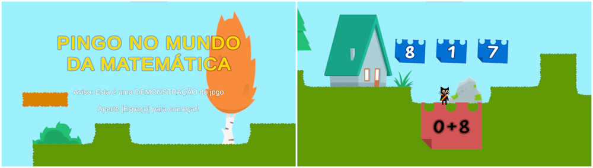
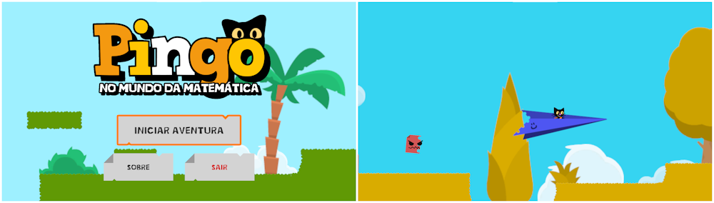
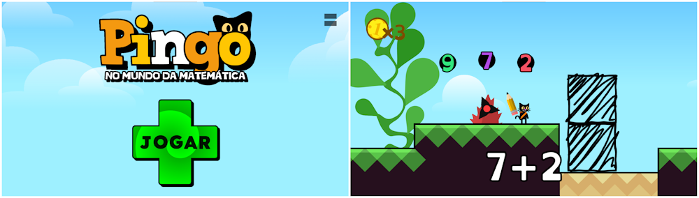
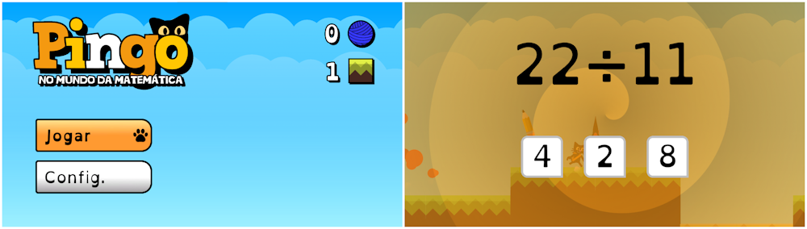

História do desenvolvimento
Durante seu desenvolvimento, o jogo passou por várias iterações. Nesta página, eu (o desenvolvedor!) vou contar um pouco sobre as atualizações mais importantes e as mudanças que elas trouxeram.
A demo (2023)
Esta demonstração foi projetada em alguns dias para demonstrar a ideia aos avaliadores da Mostra Estadual de Ciência, Tecnologia e Inovação (MECTI).
Quando o professor Wellington, meu professor de inglês da escola, sugeriu que eu adaptasse um dos meus jogos para participar da MECTI de 2023, eu disse que desenvolveria um jogo especialmente para a ocasião.
Mais tarde, enquanto esperava o ônibus para voltar para casa, eu elaborei a ideia e, chegando em casa, comecei a desenvolver uma demonstração dessa ideia.
Esta versão foi enviada junto à um pequeno vídeo que nós gravamos para inscrever o projeto para a MECTI de 2023.
XV MECTI (Outubro de 2023)
Esta é a versão que foi apresentada na décima quinta MECTI, em outubro de 2023.
Construindo em cima dos conceitos da versão de demonstração, eu expandi o mapa e adicionei algumas vilas ao longo dele. Aqui o mapa já apresenta as operações de adição, subtração e multiplicação, com dois chefões para encarar.
Um detalhe curioso é que o Pingo em si ainda não tinha uma cauda, mas os gatos da vila sim!
XVI MECTI (Outubro de 2024)
Nós também participamos da décima sexta MECTI, mas dessa vez, o jogo tinha sido praticamente refeito por completo! Eu julguei que a base de códigos do jogo seria melhor otimizada se eu refizesse (praticamente) todos os códigos outra vez, com algumas mudanças em seu design.
O resultado disso foi uma versão bem distinta daquela apresentada na MECTI do ano anterior. Agora o Pingo podia escalar nos blocos e construir, e os inimigos atiravam números em sua direção, tornando a jogabilidade um pouco mais dinâmica e desafiadora.
Outra grande mudança foi a introdução das "chaves de progresso", com elas é possível salvar o seu progresso com uma combinação de 6 caracteres, que ao serem inseridos em outra máquina, restauram o mesmo estado de jogo, assim salvando o seu progresso entre diferentes dispositivos.
Essa foi uma atualização fundamental para o jogo, visto que, em uma sala de aula, os alunos nem sempre usariam o mesmo computador.
Durante esta apresentação, o jogo estava em fase de aprovação na Google Play Store.
23ª FEBRACE (março de 2025)
Esta é a versão mais recente até o momento. Ela foi desenvolvida no começo do ano de 2025 para ser apresentada na vigésima terceira Feira Brasileria de Ciências e Engenharia (FEBRACE 2023) em São Paulo!
Mais uma vez, essa versão foi baseada na anterior mas com praticamente todos os códigos sendo reescritos (uma decisão que não foi muito produtiva!).
Dessa vez até os códigos da interface foram escritos por mim para evitar situações onde nenhum botão estaria selecionado, causando problemas para alguém que estivesse jogando apenas no teclado ou controle.
Para escalar a dificuldade das questões matemáticas que poderiam ser exibidas, eu mudei o sistema para que elas fossem dispostas em uma tela que pausa o jogo, dando um tempo para você responder e dividindo um pouco a ação da resolução de problemas matemáticos!
